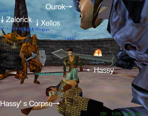

▼一斉Fear
ArenaゾーンでFearを使われるとぶっ飛びます。そして柱に突き刺さります。
Fearかからなかった人から見るとナカナカ楽しかったりして。
Mayou begins to cast a spell.
You resist the Wave of Fear spell!!
Zailorick 「うお＠」
Hassy 「まとめて飛んだ」
Rayfas 「お掃除（笑）」
▼毎度おなじみ
Shriast「乱 戦 モ ー ド ？」
Yukina 「KILL Guild Master ?」
Shriast 「そしてkillした人が次のGM（笑）」
Chromeheart 「下克上モード」
＊ KazeのDuel大会ネタ。→
こちら参照
Muun 「怒ったぞー」
Muun begins to cast a spell.
Yukina has been struck down by wrath.
Shriast 「Yukina 死にかけ？」
Yukina 「MUUNにやられちゃう」
▼Kazeの大道芸人・Miyu
Miyu 「えーい、片っ端から回してやるーー（笑）」
範囲スタン魔法炸裂。
Zabitan 「まだ回ってるー」
Zailorick 「＠＠；；」
Zabitan 「回ってるー」
Miyu 「回れーーー（笑）」
Zabitan 「すごーく回った」
Miyu 「ふふふ、次 回るのは誰だーーー（笑）」
▼微笑み。
Shriast beams a smile at Kumadceea.
Shriast 'Ahhh, i feel much better now....'
Kumadceea 「おああぁ・・・」
Shriast 「hot key 登録完了！」
Ourok 「Shri Kuma ナンパちゅー（笑）」
Shriast「ちゃうわ（笑）」
Ourok 「笑いかけてたじゃん（笑）」
Shriast beams a smile at Ourok.
Shriast 'Ahhh, i feel much better now....'
Ourok 「Ourok ナンパされた（笑）」
▼オチ↑
Shriast 「ああ！ guildsayじゃん！（笑）」
Mayou 「え、気づくの遅い（笑）」
Shriast 「ぐ」
▼俺のHotKey
Miyu pierces YOU for 8 points of damage.
Shriast Scores a critical hit!(0)
Miyu tries to pierce YOU, but misses!
You slash Miyu for 37 points of damage.
You say, 'Hit by non-melee for 1 damage'
▼そんなことしてるから
Shriast 「やべえ、Miyuに負ける（笑）」
Muun 「いい勝負 Miyu vs Shri」
Miyu 「DD 撃つぞーー（笑）」
Shriast「やめてーーー（笑）」
Miyu begins to cast a spell.
Your world dissolves into Anarchy.
You have been slain by Miyu!
LOADING, PLEASE WAIT...
Mayou 「あ（笑）」
Muun 「死んでる」
Shriast 「Bash miss したらダメじゃーん（笑）」
Miyu 「我がcastは止まらんぞーー（笑）」
Mayou 「暴走だー」
Mayou 「やっちゃえ」
▼いつのまにか死亡者もう一人
Hassy 「弓 誤射すると余計な敵を増やすね（笑）」
と回収しているHassyの横でしゃがんで、回収のフリ開始。

Hassy 「取らないでー」
Shriast「とった」
Shriast「screenshot を（笑）」
Ourok 「おいしそう・・・・・・・」
Mujinkun 「＠＠；」
Hassy 「食べないでー」
Shriast じーーーーーー
Muun つんつん。
Kumadceea 「わはははは」
Ourok snif snif.
Chromeheart 「ほほー」
Shriast 「おおー、これは・・・おおお・・・・」
Chromeheart 「ちょっと内臓が黒いですね（笑）」
Shriast nods.
Ourok 「うなずくし（笑）」
Chromeheart 「yum yum」
Ourok ぱくぱく
Shriast 「食うな食うな」
Mayou 「死体の横だと瞑想に集中できるわ」
Shriast 「Hassy の死体を囲む会（笑）」
Chromeheart 「ちょっとくさみがあっておいしい」
Muun 「食い終わった」
Hassy 「食べられた」
Ourok ふー 満腹

Hassy 「うお！ こんなに大勢で食ってたのか！」
▼らヴりぃLatyes
Shriast「Laty！！」
Latyes 「ふふ」
Latyes 「遅れちゃったー」
Latyes blushes at Shriast.
Ourok snif snif......
Ourok 「hehe, you small and cute. )」
Latyes 「えへへーうれしー」
Shriast「口 説 く な OUROK」
▼Kazeのデコボコ漫才
Chromeheart crushes Ourok for 1 point of damage.
You slash Ourok for 2 points of damage.
Chromeheart crushes Ourok for 5 points of damage.
You slash Ourok for 3 points of damage.
Ourok 「KAIYU ぜ（笑）」
Ourok 「KAYUI ぜ（笑）」
Chromeheart 「ぷ（笑）」
Chromeheart 「ぎく・・・・」
Ourok slashes Chromeheart for 69 points of damage.
Chromeheart 「いててー」
Ourok slashes Chromeheart for 64 points of damage.
Chromeheart 「ゴメンナサイ（笑）」
Ourok 「よし（笑）」
▼戦えPaladin
成り行きでShriast VS Hassy（大幅に中略）
隣ではZailorick VS Zabitanが決まった模様。
Zailorick 「やた＠」
Zabitan 「やっぱ勝てないー」
Zabitan 「zailo 最強ー」
で、一方のPALvsRNG。
Shriast 「当たらーん！」
Hassy 「agi 高いよん ）」
Shriast 「そして Resistしすぎ（笑）」
Hassy 「っしゃ」
Shriast「ダメだー！！」
Shriast「RNGめーー！！（笑）」
Ourok「もう一人のFallenPalも成敗されそ」
You have been slain by Hassy!
LOADING, PLEASE WAIT...
▼リベンジ開始
Muun 「palの死体がいっぱい」
Shriast「誰 が FALLEN PAL じゃーーーーーーー！！！！」
Hassy 「やっほう！！」
Shriast 「RNGの手数多すぎ・・・（TT」
Shriast 「cast できん・・・」
Hassy 「結構打ち消せるもんだねー」
Shriast 「い つ か REVANGE」
Hassy 「いつでも来ーーい！」
Zailorick「＠＠；；」
Shriast「じゃあ今（笑）」
Zailorick 「go（笑）」
Auto attack on.
You try to punch Hassy, but miss!
Hassy 「それはちょっと・・・」
Kumadceea 「あははは」
You punch Hassy for 1 point of damage.
You punch Hassy for 1 point of damage.
Hassy slashes YOU for 13 points of damage.
Hassy pierces YOU for 13 points of damage.
▼よく見ると
Shriast 「あ、ちゃっかり回復してる（笑）」
Shriast 「なし なし（笑）」
Hassy 「うはははは」
Hassy 「ケンカ売っといて逃げんのかー！！」
Shriast 「ひー」
▼回収
You receive 3 platinum, 19 gold, 45 silver, 39 copper from the corpse.
Miyu begins to cast a spell.
You are enveloped in blazing energy.
Hassy was burned.
Hassy kicks YOU for 13 points of damage.
Hassy was burned.
HHassy pierces YOU for 13 points of damage.
Hassy was burned.
HHassy pierces YOU for 8 points of damage.
You slash Hassy for 32 points of damage.
You slash Hassy for 15 points of damage.
Miyu 「DS きついなーー（笑）」
Miyu 「手数多いと」
Shriast「回収しつつ殴り（笑）」
Hassy 「装備が良くなってく」
Shriast 「回収終わり」
Hassy 「ああー」
You have slain Hassy!
Kumadceea 「おぉぉぉ」
Zailorick 「やた」
Shriast「REVANGE 完 了」
Shriast「さ、残り回収（笑）」
Kumadceea claps hands together - hurray!
そして第２戦はArena全体を使ってのバトル！
・・・広すぎて全然記録が取れてませんが（；ｘ；）